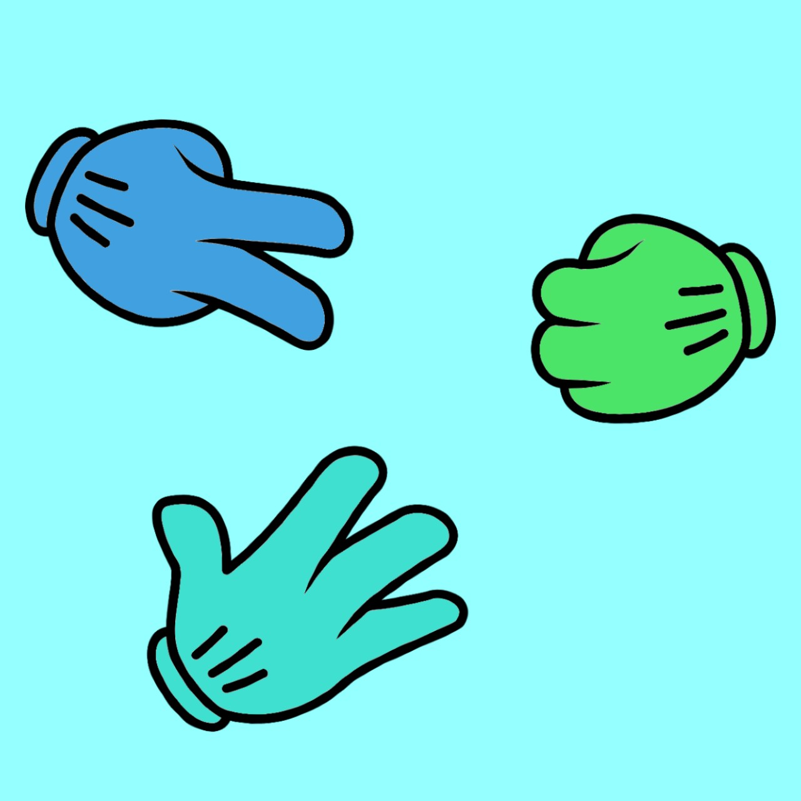

Rock paper scissors is a well known game which is quick and easy to play. To start our virtual rendition of the game, either choose single player mode or multiplayer mode. From here, you will be prompted to make a choice of rock, paper or scissors. Make your choice, and have fun!